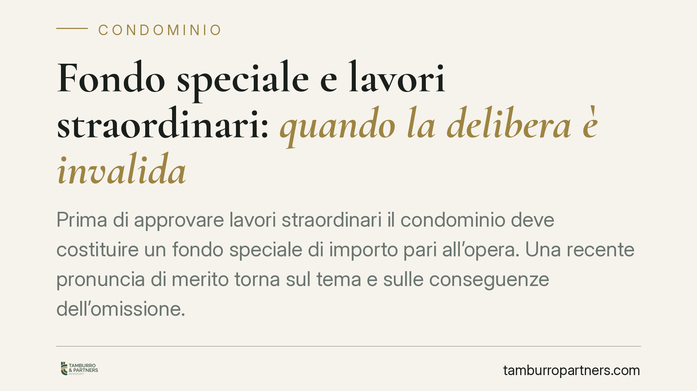

Fondo speciale e lavori straordinari: quando la delibera è invalida
Prima di approvare lavori straordinari il condominio deve costituire un fondo speciale di importo pari all'opera. Una recente pronuncia di merito torna sul tema e sulle conseguenze dell'omissione. La questione tocca amministratori, imprese e singoli condòmini, perché incide sulla validità della delibera e sulla gestione dei rapporti con l'appaltatore.

Il caso e una premessa di metodo
La vicenda riguarda una delibera assembleare che ha approvato lavori straordinari senza la preventiva costituzione del fondo speciale previsto dall'art. 1135 c.c. Un condomino ha impugnato la decisione; la pronuncia di merito che ha deciso la controversia (attribuita al Tribunale di Bologna) ha ritenuto la delibera invalida.
Una precisazione doverosa: gli estremi della sentenza (indicata come n. 5377/2026) e la relativa datazione vanno verificati presso la fonte ufficiale. Trattiamo quindi la pronuncia come singola decisione di merito, non come precedente consolidato o principio acquisito.
Inquadramento normativo
L'art. 1135, comma 1, n. 4, c.c. stabilisce che l'assemblea, quando delibera opere di manutenzione straordinaria e innovazioni, provvede alla costituzione di un fondo speciale di importo pari all'ammontare dei lavori. La norma consente, se l'esecuzione è prevista per stati di avanzamento (SAL), che il fondo sia costituito in relazione ai singoli pagamenti dovuti.
La finalità è chiara: garantire in anticipo la copertura finanziaria dell'opera, tutelando sia i condòmini sia l'impresa appaltatrice, che così opera in un contesto di provvista assicurata.
Nullità o annullabilità: una qualificazione dibattuta
Il punto giuridicamente più delicato riguarda il tipo di vizio.
Una parte della giurisprudenza e della dottrina qualifica l'omessa costituzione del fondo come vizio procedimentale, quindi causa di annullabilità. Ne deriva che la delibera resta efficace se non viene impugnata nel termine di trenta giorni previsto dall'art. 1137 c.c. (decorrente dalla delibera, per i presenti, o dalla comunicazione, per gli assenti). La distinzione non è teorica:
- la nullità è insanabile, può essere fatta valere da chiunque vi abbia interesse e in ogni tempo;
- l'annullabilità opera solo se impugnata nei termini, decorsi i quali la delibera si consolida.
La decisione qui in commento aderisce invece alla tesi più rigorosa della nullità per violazione di norma imperativa. Si tratta, allo stato, di un orientamento non pacifico: chi intende farne uso deve essere consapevole che l'indirizzo prevalente propende per l'annullabilità e per la conseguente necessità di rispettare il termine breve di impugnazione.
Il rapporto con il contratto di appalto
Altro profilo da maneggiare con cautela è quello dei rapporti con l'impresa. Dedurre in modo automatico che l'invalidità della delibera renda inefficace il contratto di appalto è una semplificazione.
Gli effetti verso l'appaltatore, terzo rispetto al rapporto interno condominiale, dipendono da ulteriori valutazioni: il tipo di vizio accertato, la buona fede del terzo, l'eventuale avvenuta esecuzione delle opere e le regole sulla rappresentanza dell'amministratore. La sorte del contratto non discende quindi meccanicamente dalla sorte della delibera.
Implicazioni pratiche
Per l'amministratore. Portare in approvazione lavori straordinari senza prevedere la costituzione del fondo espone la delibera a impugnazione e può fondare profili di responsabilità gestoria. La cautela minima è inserire il fondo (o il piano dei SAL) nel testo della proposta.
Per l'impresa appaltatrice. Prima di sottoscrivere, è opportuno accertare che la delibera contenga la costituzione del fondo o il collegamento agli stati di avanzamento. Un vizio nella deliberazione può riflettersi sulla certezza della provvista.
Per il condomino. Se rileva l'assenza del fondo, il tempo è un fattore decisivo. Anche chi ritenga di poter invocare la nullità deve considerare che, se prevalesse la tesi dell'annullabilità, il termine di trenta giorni ex art. 1137 c.c. sarebbe determinante.
Per il condominio nel suo insieme. Una delibera incerta significa rischio di contenzioso, sospensione dei lavori e possibili contestazioni con l'impresa.
Cosa fare in concreto
- Inserire il fondo speciale nella proposta di delibera per ogni intervento straordinario, quantificandolo pari all'importo dei lavori.
- Se l'opera procede per stati di avanzamento, agganciare il fondo ai singoli SAL, dandone atto a verbale.
- Verbalizzare in modo puntuale modalità di costituzione, importi e tempistiche di versamento.
- Rispettare i termini di reazione: chi contesta valuti l'impugnazione entro trenta giorni, senza affidarsi alla sola prospettiva della nullità.
- Nei rapporti con l'impresa, coordinare la firma del contratto con l'effettiva regolarità della delibera.
*Contributo informativo a cura di Tamburro & Partners – Avv. Giuseppe Tamburro. Non costituisce parere legale.*
Ogni condominio ha una storia a sé.
Se gestisci un'amministrazione e vuoi un confronto su una specifica questione condominiale, scrivi allo studio. Ti rispondiamo entro un giorno lavorativo.